Chapter 13 Exploratory Data Analysis in R
13.1 Exploring Categorical Data
13.1.1 Categorical data
13.1.1.1 Contingency table
Create a contingency table by table(), is a useful way to represent the total counts of observations that fall into each combination of the levels of categorical variables.
comics dataset is a collection of characteristics on all of the superheroes created by Marvel and DC comics in the last 80 years.
library(tidyverse)
comics <- read_csv("data/comics.csv", col_types = "ffffffffiff")
glimpse(comics)## Rows: 23,272
## Columns: 11
## $ name <fct> "Spider-Man (Peter Parker)", "Captain America (Steven Rog…
## $ id <fct> Secret, Public, Public, Public, No Dual, Public, Public, …
## $ align <fct> Good, Good, Neutral, Good, Good, Good, Good, Good, Neutra…
## $ eye <fct> Hazel Eyes, Blue Eyes, Blue Eyes, Blue Eyes, Blue Eyes, B…
## $ hair <fct> Brown Hair, White Hair, Black Hair, Black Hair, Blond Hai…
## $ gender <fct> Male, Male, Male, Male, Male, Male, Male, Male, Male, Mal…
## $ gsm <fct> NA, NA, NA, NA, NA, NA, NA, NA, NA, NA, NA, NA, NA, NA, N…
## $ alive <fct> Living Characters, Living Characters, Living Characters, …
## $ appearances <int> 4043, 3360, 3061, 2961, 2258, 2255, 2072, 2017, 1955, 193…
## $ first_appear <fct> "Aug-62", "Mar-41", "Oct-74", "Mar-63", "Nov-50", "Nov-61…
## $ publisher <fct> marvel, marvel, marvel, marvel, marvel, marvel, marvel, m…# Check levels of align
levels(comics$align)## [1] "Good" "Neutral" "Bad"
## [4] "Reformed Criminals"# Check the levels of gender
levels(comics$gender)## [1] "Male" "Female" "Other"# Create a 2-way contingency table
tab <- table(comics$gender, comics$align); tab##
## Good Neutral Bad Reformed Criminals
## Male 4809 1799 7561 2
## Female 2490 836 1573 1
## Other 17 17 32 013.1.1.2 Dropping levels
The contingency table from the last exercise revealed that there are some levels that have very low counts. To simplify the analysis, it often helps to drop such levels.
Two steps:
filtering out any rows with the levels that have very low counts,
removing these levels from the factor variable with
droplevels().
(This is because the droplevels() would keep levels that have just 1 or 2 counts; it only drops levels that don’t exist in a dataset.)
Find out which level of align has the fewest total entries. Then filter out all rows of comics with that level, then drop the unused level with droplevels().
# Remove align level
comics_filtered <- comics %>%
filter(align != "Reformed Criminals") %>%
droplevels()
# See the result
comics_filtered## # A tibble: 19,856 × 11
## name id align eye hair gender gsm alive appearances first_appear
## <fct> <fct> <fct> <fct> <fct> <fct> <fct> <fct> <int> <fct>
## 1 "Spider-… Secr… Good Haze… Brow… Male <NA> Livi… 4043 Aug-62
## 2 "Captain… Publ… Good Blue… Whit… Male <NA> Livi… 3360 Mar-41
## 3 "Wolveri… Publ… Neut… Blue… Blac… Male <NA> Livi… 3061 Oct-74
## 4 "Iron Ma… Publ… Good Blue… Blac… Male <NA> Livi… 2961 Mar-63
## 5 "Thor (T… No D… Good Blue… Blon… Male <NA> Livi… 2258 Nov-50
## 6 "Benjami… Publ… Good Blue… No H… Male <NA> Livi… 2255 Nov-61
## 7 "Reed Ri… Publ… Good Brow… Brow… Male <NA> Livi… 2072 Nov-61
## 8 "Hulk (R… Publ… Good Brow… Brow… Male <NA> Livi… 2017 May-62
## 9 "Scott S… Publ… Neut… Brow… Brow… Male <NA> Livi… 1955 Sep-63
## 10 "Jonatha… Publ… Good Blue… Blon… Male <NA> Livi… 1934 Nov-61
## # ℹ 19,846 more rows
## # ℹ 1 more variable: publisher <fct>str(comics_filtered$align)## Factor w/ 3 levels "Good","Neutral",..: 1 1 2 1 1 1 1 1 2 1 ...13.1.1.3 Side-by-side bar charts
While a contingency table represents the counts numerically, it’s often more useful to represent them graphically.
Here you’ll construct two side-by-side bar charts of the comics data. This shows that there can often be two or more options for presenting the same data.
# Create side-by-side bar chart of gender by alignment
ggplot(comics, aes(x = align, fill = gender)) +
geom_bar(position = "dodge")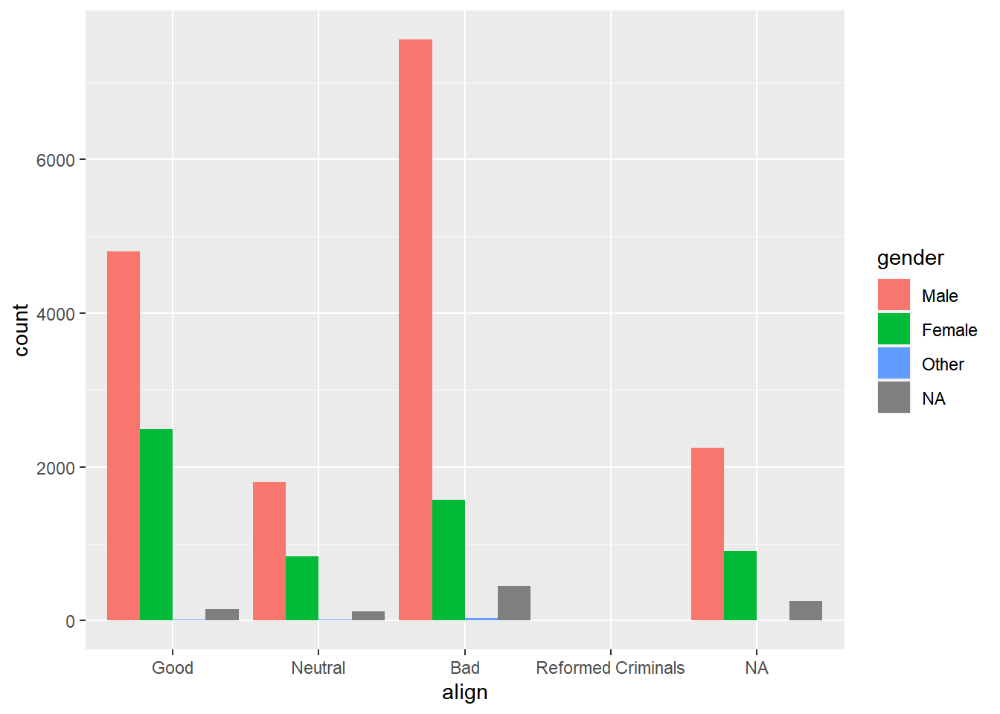
# Create side-by-side bar chart of alignment by gender
ggplot(comics, aes(x = gender, fill = align)) +
geom_bar(position = "dodge") +
theme(axis.text.x = element_text(angle = 90))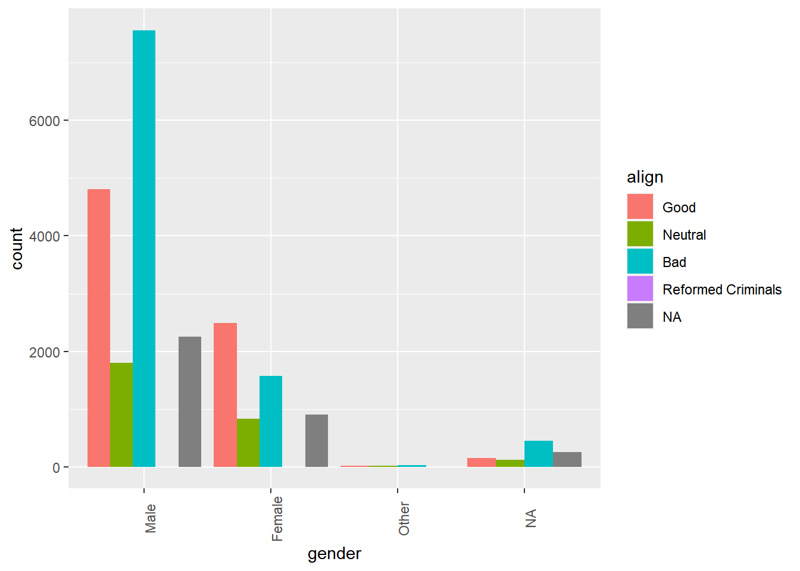
13.1.2 Counts vs. proportions
13.1.2.1 Proportions
# Simplify display format
options(scipen = 999, digits = 3)
tab_cnt <- table(comics$id, comics$align)
tab_cnt##
## Good Neutral Bad Reformed Criminals
## Secret 2475 959 4493 1
## Public 2930 965 2172 1
## No Dual 647 390 474 0
## Unknown 0 2 7 0Compute the proportions by prop.table(table).
prop.table(tab_cnt)##
## Good Neutral Bad Reformed Criminals
## Secret 0.1595128 0.0618072 0.2895721 0.0000644
## Public 0.1888373 0.0621939 0.1399845 0.0000644
## No Dual 0.0416989 0.0251353 0.0305491 0.0000000
## Unknown 0.0000000 0.0001289 0.0004511 0.0000000Note that because these are all proportions out of the whole dataset, the sum of all of these proportions is 1.
sum(prop.table(tab_cnt))## [1] 113.1.2.2 Conditional proportions
condition on the rows: prop.table(table, 1)
prop.table(tab_cnt, 1)##
## Good Neutral Bad Reformed Criminals
## Secret 0.312185 0.120964 0.566726 0.000126
## Public 0.482861 0.159031 0.357943 0.000165
## No Dual 0.428193 0.258107 0.313700 0.000000
## Unknown 0.000000 0.222222 0.777778 0.000000Because we’re conditioning on row, it’s every row that now sums to one.
rowSums(prop.table(tab_cnt, 1))## Secret Public No Dual Unknown
## 1 1 1 1condition on the columns: prop.table(table, 2)
prop.table(tab_cnt, 2)##
## Good Neutral Bad Reformed Criminals
## Secret 0.408956 0.414076 0.628743 0.500000
## Public 0.484137 0.416667 0.303946 0.500000
## No Dual 0.106907 0.168394 0.066331 0.000000
## Unknown 0.000000 0.000864 0.000980 0.000000Because we’re conditioning on column, it’s every column that now sums to one.
colSums(prop.table(tab_cnt, 2))## Good Neutral Bad Reformed Criminals
## 1 1 1 1Approximately 41% of all good characters are secret.
13.1.2.3 Conditional bar chart
Bar charts can tell dramatically different stories depending on whether they represent counts or proportions and, if proportions, what the proportions are conditioned on.
By adding position = "fill" to geom_bar(), you are saying you want the bars to fill the entire height of the plotting window, thus displaying proportions and not raw counts.
Create a stacked bar chart of gender counts.
# Plot of gender by align
ggplot(comics, aes(x = align, fill = gender)) +
geom_bar()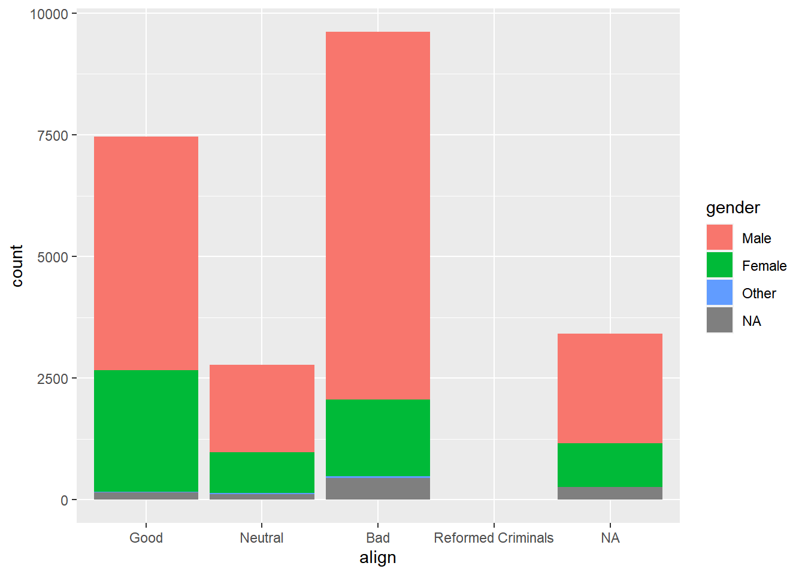
Create a stacked bar chart of gender proportions.
# Plot proportion of gender, conditional on align
ggplot(comics, aes(x = align, fill = gender)) +
geom_bar(position = "fill") +
ylab("proportion")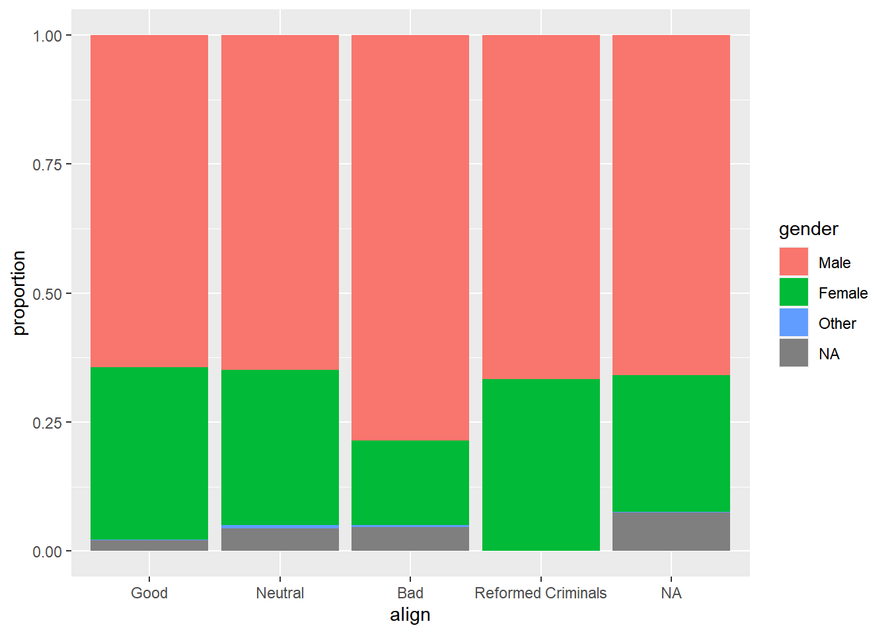
13.1.3 Distribution of one variable
13.1.3.1 Marginal bar chart
If you are interested in the distribution of alignment of all superheroes, it makes sense to construct a bar chart for just that single variable.
You can improve the interpretability of the plot, though, by implementing some sensible ordering.
# Change the order of the levels in align
comics$align <- factor(comics$align,
levels = c("Bad", "Neutral", "Good"))
# Create plot of align
ggplot(comics, aes(x = align)) +
geom_bar()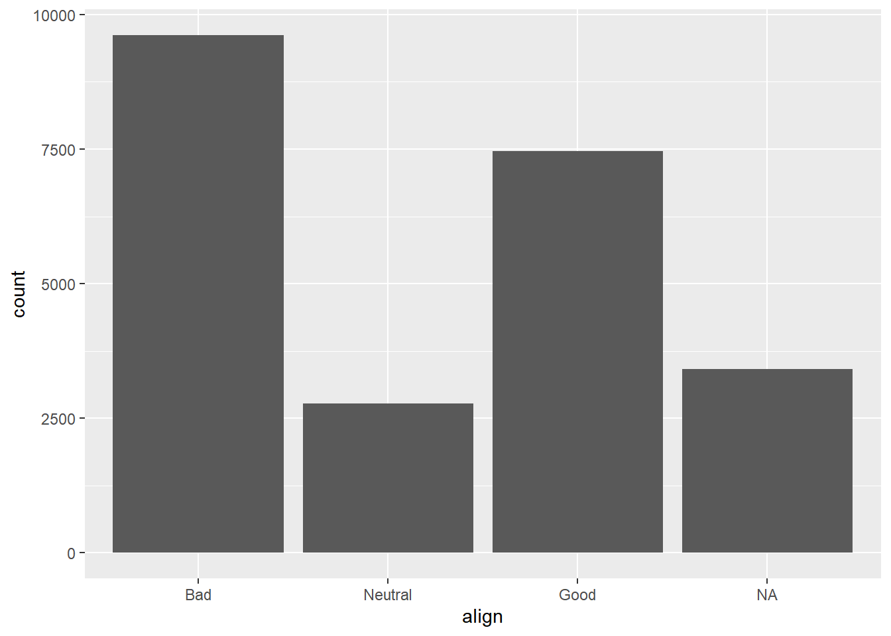
13.1.3.2 Conditional bar chart
Now, if you want to break down the distribution of alignment based on gender, you’re looking for conditional distributions.
You could make these by creating multiple filtered datasets (one for each gender) or by faceting the plot of alignment based on gender.
Create a bar chart of align faceted by gender.
# Plot of alignment broken down by gender
ggplot(comics, aes(x = align)) +
geom_bar() +
facet_wrap(~ gender)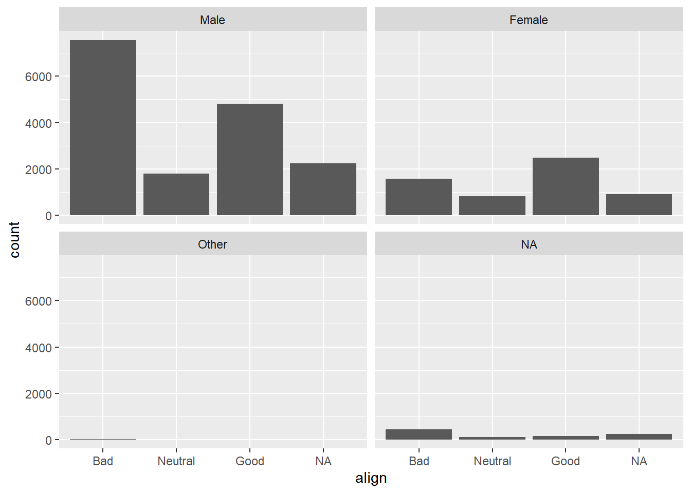
13.1.3.3 Improve pie chart
The pie chart is a very common way to represent the distribution of a single categorical variable, but they can be more difficult to interpret than bar charts.
This is a pie chart of a dataset called pies that contains the favorite pie flavors of 98 people.
pies <- read_delim("data/pies.txt", delim = ",")## Rows: 98 Columns: 1
## ── Column specification ──────────────────────
## Delimiter: ","
## chr (1): flavor
##
## ℹ Use `spec()` to retrieve the full column specification for this data.
## ℹ Specify the column types or set `show_col_types = FALSE` to quiet this message.pies$flavor <- as.factor(pies$flavor)
# pie chart, 很難看出數量很難看出數量高低
ggplot(pies, aes(x = factor(1), fill = flavor)) +
geom_bar(width = 1) +
coord_polar(theta = "y") +
theme_void()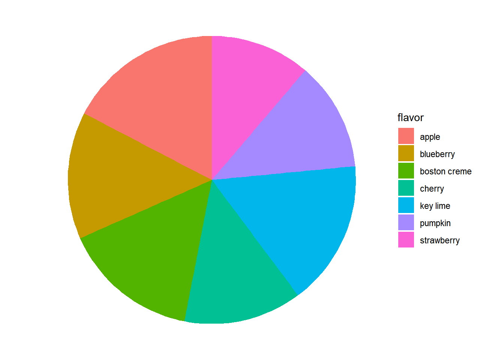
Improve the representation of these data by constructing a bar chart that is ordered in descending order of count.
# Put levels of flavor in descending order
lev <- c("apple", "key lime", "boston creme", "blueberry", "cherry", "pumpkin", "strawberry")
pies$flavor <- factor(pies$flavor, levels = lev)
# Create bar chart of flavor
ggplot(pies, aes(x = flavor)) +
geom_bar(fill = "chartreuse") +
theme(axis.text.x = element_text(angle = 90))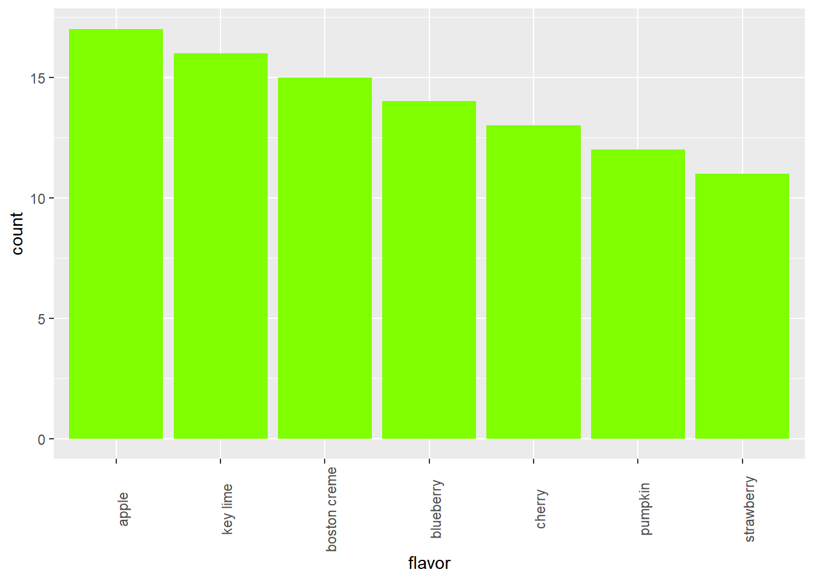
13.2 Exploring numerical data
13.2.1 Numerical Data
13.2.1.1 Faceted histogram
cars dataset, which records characteristics on all of the new models of cars for sale in the US in a certain year.
You will investigate the distribution of mileage across a categorical variable,
cars <- read_csv("data/cars04.csv")
# Learn data structure
str(cars, give.attr = FALSE)## spc_tbl_ [428 × 19] (S3: spec_tbl_df/tbl_df/tbl/data.frame)
## $ name : chr [1:428] "Chevrolet Aveo 4dr" "Chevrolet Aveo LS 4dr hatch" "Chevrolet Cavalier 2dr" "Chevrolet Cavalier 4dr" ...
## $ sports_car : logi [1:428] FALSE FALSE FALSE FALSE FALSE FALSE ...
## $ suv : logi [1:428] FALSE FALSE FALSE FALSE FALSE FALSE ...
## $ wagon : logi [1:428] FALSE FALSE FALSE FALSE FALSE FALSE ...
## $ minivan : logi [1:428] FALSE FALSE FALSE FALSE FALSE FALSE ...
## $ pickup : logi [1:428] FALSE FALSE FALSE FALSE FALSE FALSE ...
## $ all_wheel : logi [1:428] FALSE FALSE FALSE FALSE FALSE FALSE ...
## $ rear_wheel : logi [1:428] FALSE FALSE FALSE FALSE FALSE FALSE ...
## $ msrp : num [1:428] 11690 12585 14610 14810 16385 ...
## $ dealer_cost: num [1:428] 10965 11802 13697 13884 15357 ...
## $ eng_size : num [1:428] 1.6 1.6 2.2 2.2 2.2 2 2 2 2 2 ...
## $ ncyl : num [1:428] 4 4 4 4 4 4 4 4 4 4 ...
## $ horsepwr : num [1:428] 103 103 140 140 140 132 132 130 110 130 ...
## $ city_mpg : num [1:428] 28 28 26 26 26 29 29 26 27 26 ...
## $ hwy_mpg : num [1:428] 34 34 37 37 37 36 36 33 36 33 ...
## $ weight : num [1:428] 2370 2348 2617 2676 2617 ...
## $ wheel_base : num [1:428] 98 98 104 104 104 105 105 103 103 103 ...
## $ length : num [1:428] 167 153 183 183 183 174 174 168 168 168 ...
## $ width : num [1:428] 66 66 69 68 69 67 67 67 67 67 ...Plot a histogram of city_mpg faceted by suv, a logical variable indicating whether the car is an SUV or not.
# Create faceted histogram
ggplot(cars, aes(x = city_mpg)) +
geom_histogram() +
facet_wrap(~ suv)## `stat_bin()` using `bins = 30`. Pick better
## value with `binwidth`.## Warning: Removed 14 rows containing non-finite values
## (`stat_bin()`).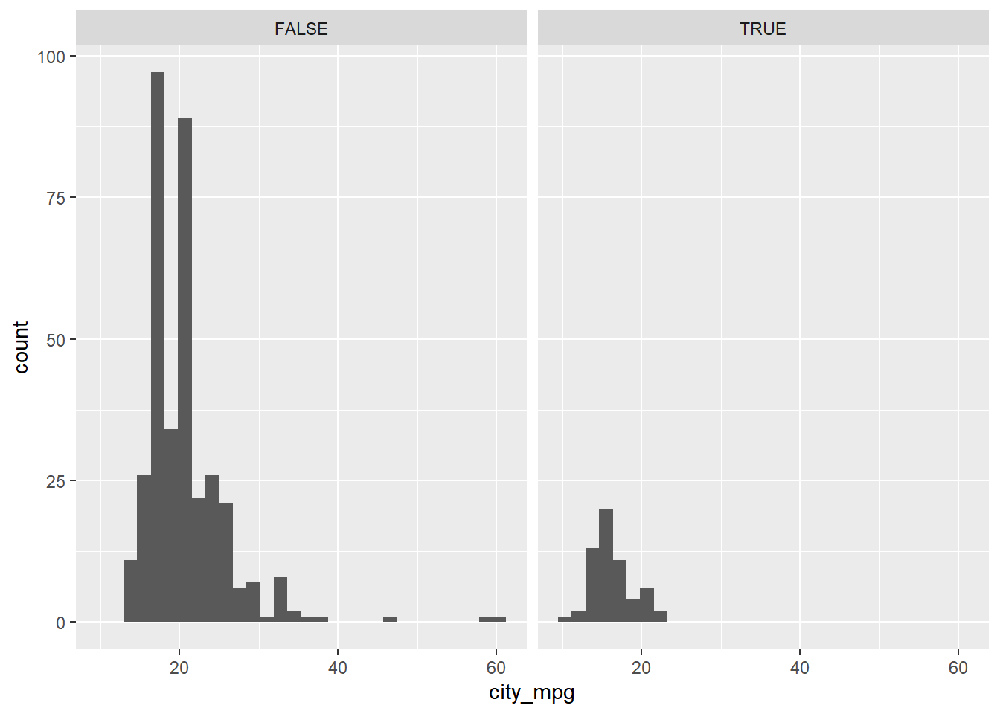
you can facet a plot by any categorical variable using facet_wrap().
13.2.1.2 Boxplots & density plots
The mileage of a car tends to be associated with the size of its engine (as measured by the number of cylinders).
To explore the relationship between these two variables, you’ll try your hand at two alternatives: the box plot and the density plot.
A quick look at ncyl shows that there are more possible levels of ncyl than you might think. Here, restrict attention to the most common levels.
unique(cars$ncyl)## [1] 4 6 3 8 5 12 10 -1# Filter cars with 4, 6, 8 cylinders
common_cyl <- filter(cars, cars$ncyl %in% c(4, 6, 8))Create side-by-side box plots.
# Create box plots of city mpg by ncyl
ggplot(common_cyl, aes(x = as.factor(ncyl), y = city_mpg)) +
geom_boxplot()## Warning: Removed 11 rows containing non-finite values
## (`stat_boxplot()`).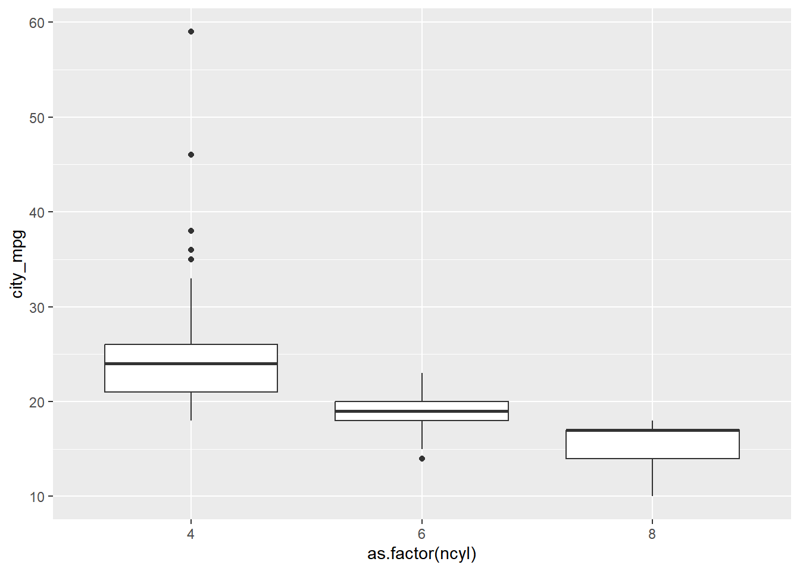
Create overlaid density plots.
# Create overlaid density plots for same data
ggplot(common_cyl, aes(x = city_mpg, fill = as.factor(ncyl))) +
geom_density(alpha = .3)## Warning: Removed 11 rows containing non-finite values
## (`stat_density()`).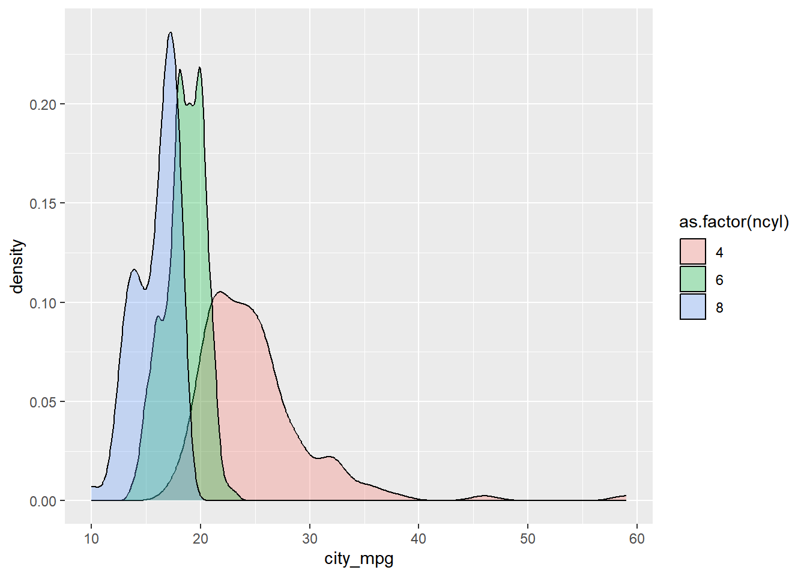
13.2.2 Distribution of one variable
13.2.2.1 Marginal & conditional hist
Now, turn your attention to a new variable: horsepwr. The goal is to get a sense of the marginal distribution of this variable and then compare it to the distribution of horsepower conditional on the price of the car being less than $25,000.
# Create hist of horsepwr
cars %>%
ggplot(aes(x = horsepwr)) +
geom_histogram() +
ggtitle("marginal distribution of horsepower")## `stat_bin()` using `bins = 30`. Pick better
## value with `binwidth`.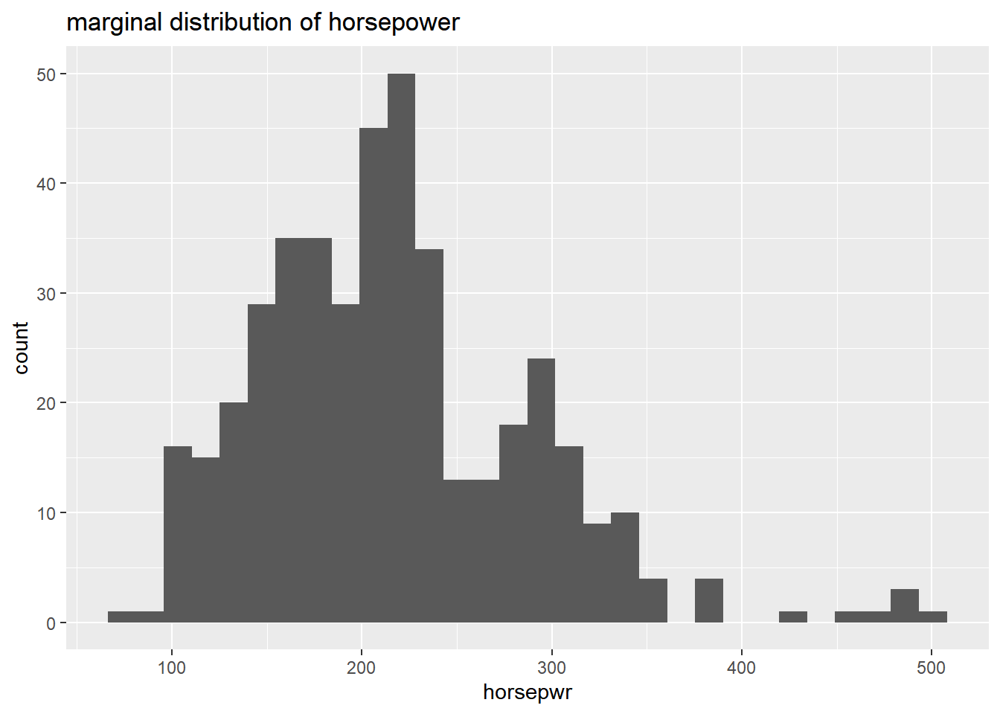
# Create hist of horsepwr for affordable cars
cars %>%
filter(msrp < 25000) %>%
ggplot(aes(x = horsepwr)) +
geom_histogram() +
xlim(c(90, 550)) +
ggtitle("distribution of horsepower conditional on the price less than $25000")## `stat_bin()` using `bins = 30`. Pick better
## value with `binwidth`.## Warning: Removed 1 rows containing non-finite values
## (`stat_bin()`).## Warning: Removed 2 rows containing missing values
## (`geom_bar()`).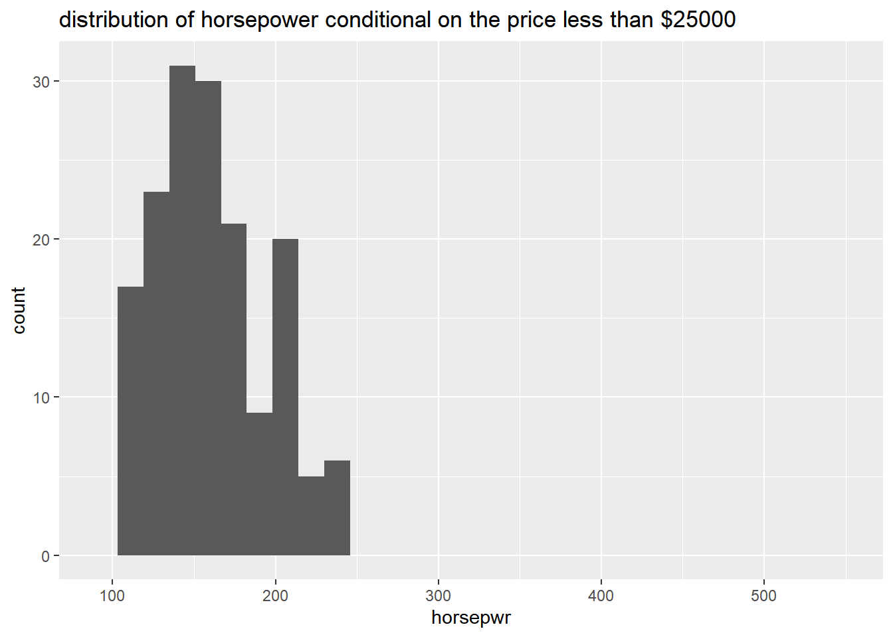
13.2.2.2 Binwidths
The binwidth determines how smooth your distribution will appear: the smaller the binwidth, the more jagged your distribution becomes.
It’s good practice to consider several binwidths in order to detect different types of structure in your data.
# Create hist of horsepwr with binwidth of 3
plot_A <- cars %>%
ggplot(aes(x = horsepwr)) +
geom_histogram(binwidth = 3) +
ggtitle("Plot A, binwidth = 3")
# Create hist of horsepwr with binwidth of 30
plot_B <- cars %>%
ggplot(aes(x = horsepwr)) +
geom_histogram(binwidth = 30) +
ggtitle("Plot B, binwidth = 30")
# Create hist of horsepwr with binwidth of 60
plot_C <- cars %>%
ggplot(aes(x = horsepwr)) +
geom_histogram(binwidth = 60) +
ggtitle("Plot C, binwidth = 60")
# put all plot together to compare
gridExtra::grid.arrange(plot_A, plot_B, plot_C, nrow = 1)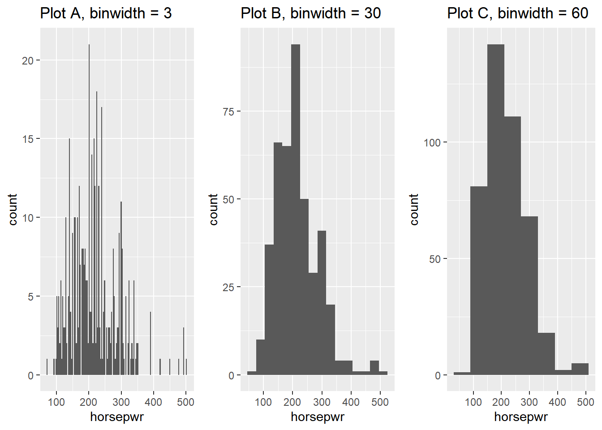
Plot A is the only histogram that shows the count for cars with exactly 200 and 300 horsepower.
13.2.3 Box plots
13.2.3.1 Box plots for outliers
In addition to indicating the center and spread of a distribution, a box plot provides a graphical means to detect outliers.
You can apply this method to the msrp column (manufacturer’s suggested retail price) to detect if there are unusually expensive or cheap cars.
# Construct box plot of msrp
cars %>%
ggplot(aes(x = 1, y = msrp)) +
geom_boxplot()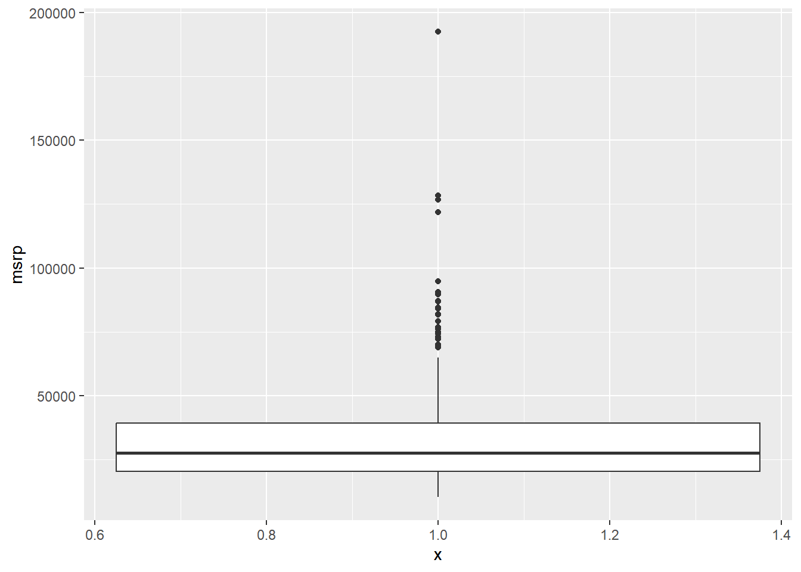
# Exclude outliers from data
cars_no_out <- cars %>%
filter(msrp < 100000)
# Construct box plot of msrp using the reduced dataset
cars_no_out %>%
ggplot(aes(x = 1, y = msrp)) +
geom_boxplot()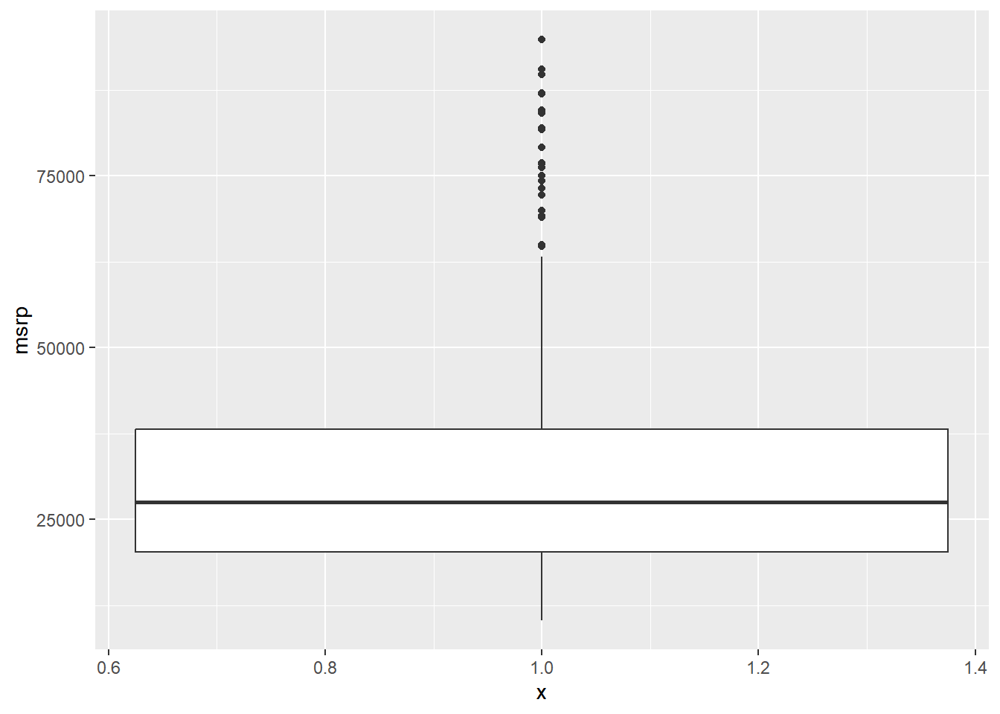
13.2.3.2 Plot selection
Both density plots and box plots display the central tendency and spread of the data, but the box plot is more robust to outliers.
Consider two other columns in the cars dataset: city_mpg and width. Which is the most appropriate plot for displaying the important features of their distributions?
For each variable, try both plots and decide which one is better at capturing the important structure.
# Create plot of city_mpg
# box plot
city_mpg_boxplot <- cars %>%
ggplot(aes(x = 1, y = city_mpg)) +
geom_boxplot()
# density plot
city_mpg_density <- cars %>%
ggplot(aes(x = city_mpg)) +
geom_density()
# Create plot of width
# box plot
width_boxplot <- cars %>%
ggplot(aes(x = 1, y = width)) +
geom_boxplot()
# density plot
width_density <- cars %>%
ggplot(aes(x = width)) +
geom_density()
gridExtra::grid.arrange(city_mpg_boxplot, city_mpg_density, width_boxplot, width_density, nrow = 2)## Warning: Removed 14 rows containing non-finite values
## (`stat_boxplot()`).## Warning: Removed 14 rows containing non-finite values
## (`stat_density()`).## Warning: Removed 28 rows containing non-finite values
## (`stat_boxplot()`).## Warning: Removed 28 rows containing non-finite values
## (`stat_density()`).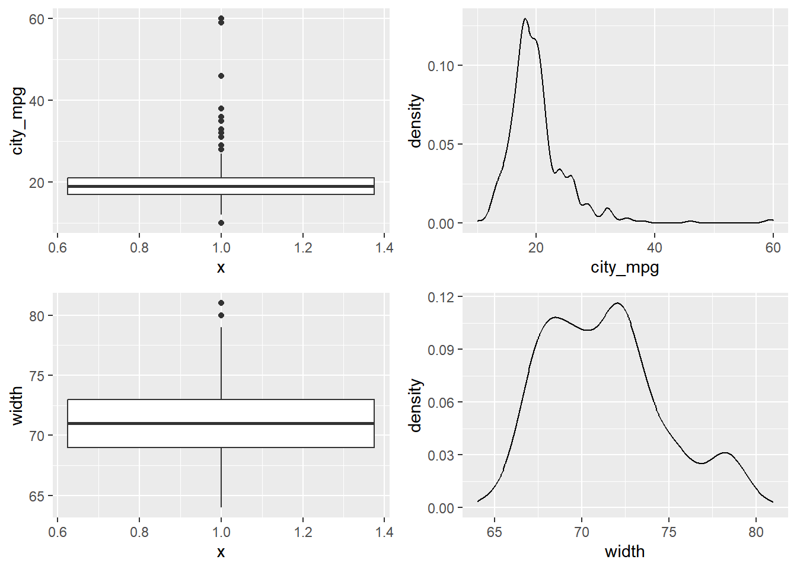
Because the city_mpg variable has a much wider range with its outliers, it’s best to display its distribution as a box plot.
13.2.4 Visual in higher dimensions
Higher dimensional plots:
Shape, Size, Color, Pattern, Movement, x-coordinate, y-coordinate
13.2.4.1 three variables plot
Faceting is a valuable technique for looking at several conditional distributions at the same time.
If the faceted distributions are laid out in a grid, you can consider the association between a variable and two others, one on the rows of the grid and the other on the columns.
Using common_cyl, create a histogram of hwy_mpg. Grid-facet the plot rowwise by ncyl and columnwise by suv.
# Facet hists using hwy mileage and ncyl
common_cyl %>%
ggplot(aes(x = hwy_mpg)) +
geom_histogram() +
facet_grid(ncyl ~ suv) +
ggtitle("hwy_mpg faceted by ncyl and suv")## `stat_bin()` using `bins = 30`. Pick better
## value with `binwidth`.## Warning: Removed 11 rows containing non-finite values
## (`stat_bin()`).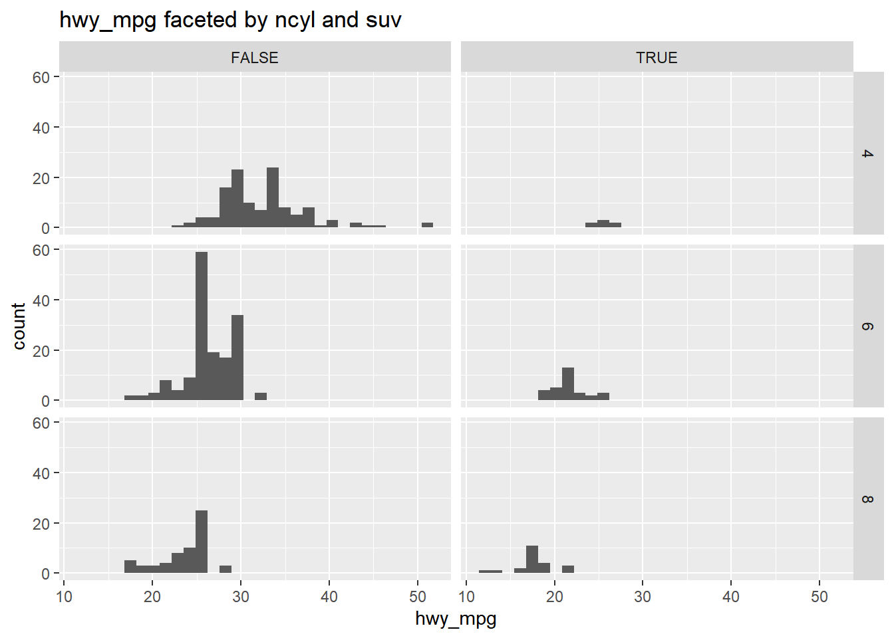
13.3 Numerical Summaries
Characteristics of a distribution
Center
Variability
Shape
Outliers
13.3.1 Measures of center
Center: mean, median, mode
The choice of measure for center can have a dramatic impact on what we consider to be a typical observation, so it is important that you consider the shape of the distribution before deciding on the measure.
13.3.1.1 Calculate center measures
You will use data from gapminder, which tracks demographic data in countries of the world over time. How the life expectancy differs from continent to continent?
# Create dataset of 2007 data
gap2007 <- filter(gapminder::gapminder, year == 2007)
# Compute groupwise mean and median lifeExp
gap2007 %>%
group_by(continent) %>%
summarize(mean(lifeExp),
median(lifeExp))## # A tibble: 5 × 3
## continent `mean(lifeExp)` `median(lifeExp)`
## <fct> <dbl> <dbl>
## 1 Africa 54.8 52.9
## 2 Americas 73.6 72.9
## 3 Asia 70.7 72.4
## 4 Europe 77.6 78.6
## 5 Oceania 80.7 80.7# Generate box plots of lifeExp for each continent
gap2007 %>%
ggplot(aes(x = continent, y = lifeExp)) +
geom_boxplot()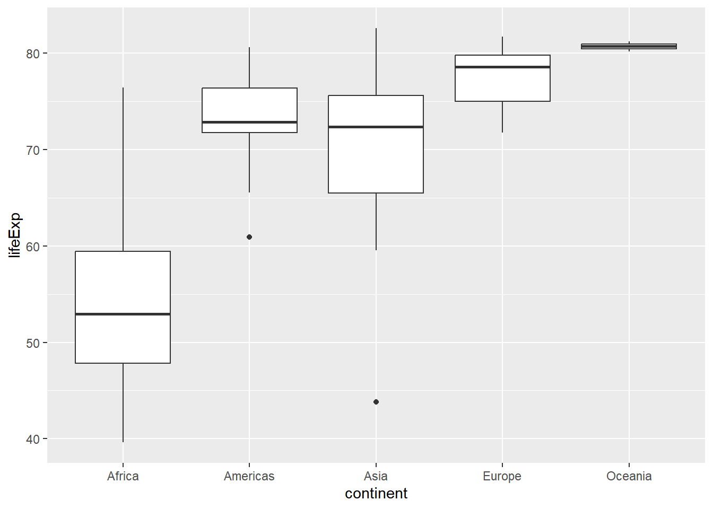
13.3.2 Measures of variability
Variability: variance, standard deviation, interquartile range(IQR), range
The choice of measure for spread can dramatically impact how variable we consider our data to be, so it is important that you consider the shape of the distribution before deciding on the measure.
IQR is useful when your dataset is heavily skewed or has extreme observations.
13.3.2.1 Calculate spread measures
summarize life expectancies using the sd(), the IQR(), and the count of countries, n().
# Compute groupwise measures of spread
gap2007 %>%
group_by(continent) %>%
summarize(sd(lifeExp),
IQR(lifeExp),
n())## # A tibble: 5 × 4
## continent `sd(lifeExp)` `IQR(lifeExp)` `n()`
## <fct> <dbl> <dbl> <int>
## 1 Africa 9.63 11.6 52
## 2 Americas 4.44 4.63 25
## 3 Asia 7.96 10.2 33
## 4 Europe 2.98 4.78 30
## 5 Oceania 0.729 0.516 2# Graphically compare the spread of these distributions
# Generate overlaid density plots
gap2007 %>%
ggplot(aes(x = lifeExp, fill = continent)) +
geom_density(alpha = 0.3)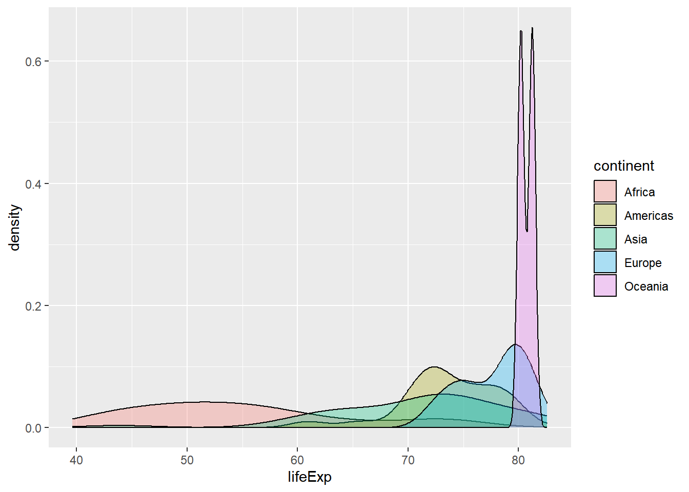
13.3.2.2 Choose measures for center & spread
Using the shapes of the density plots, calculate the most appropriate measures of center and spread.
# The distribution of life expectancy in the countries of the Americas.
gap2007 %>%
filter(continent == "Americas") %>%
ggplot(aes(x = lifeExp)) +
geom_density()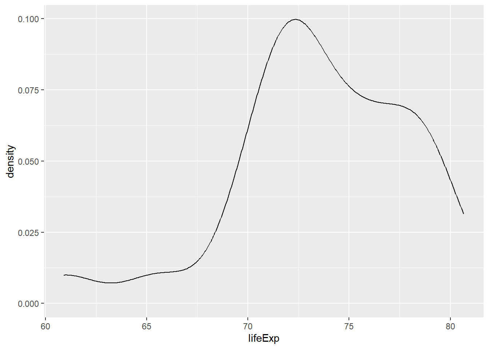
# Compute stats for lifeExp in Americas
gap2007 %>%
filter(continent == "Americas") %>%
summarize(mean(lifeExp),
sd(lifeExp))## # A tibble: 1 × 2
## `mean(lifeExp)` `sd(lifeExp)`
## <dbl> <dbl>
## 1 73.6 4.44# The distribution of country populations across the entire gap2007 dataset.
gap2007 %>%
ggplot(aes(x = pop)) +
geom_density()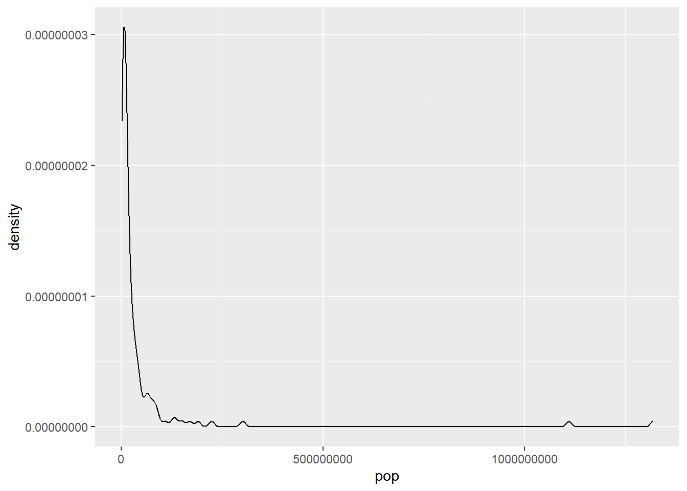
median and IQR measure the central tendency and spread, respectively, but are robust to outliers and non-normal data.
# Compute stats for population
gap2007 %>%
summarize(median(pop),
IQR(pop))## # A tibble: 1 × 2
## `median(pop)` `IQR(pop)`
## <dbl> <dbl>
## 1 10517531 26702008.13.3.3 Shape & transformations
Modality
The modality of a distribution is the number of prominent humps that show up in the distribution.
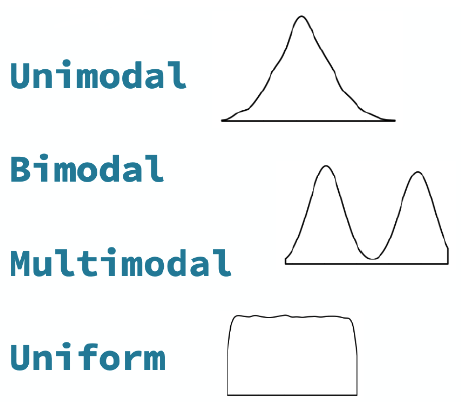
Skew
The skew is where the long tail is.
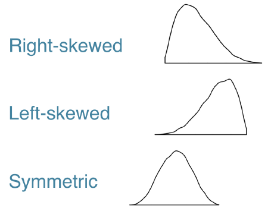
13.3.3.1 Transformations
Highly skewed distributions can make it very difficult to learn anything from a visualization. Transformations can be helpful in revealing the more subtle structure.
# Original pop shape
pop_nontrans_plot <- gap2007 %>%
ggplot(aes(x = pop)) +
geom_density() +
ggtitle("population without transform")
# Transform the skewed pop variable
gap2007 <- gap2007 %>%
mutate(log_pop = log(pop))
# Create density plot of new variable
pop_trans_plot <- gap2007 %>%
ggplot(aes(x = log_pop)) +
geom_density() +
ggtitle("population with log transform")
# compare transforming
gridExtra::grid.arrange(pop_nontrans_plot, pop_trans_plot, nrow = 1)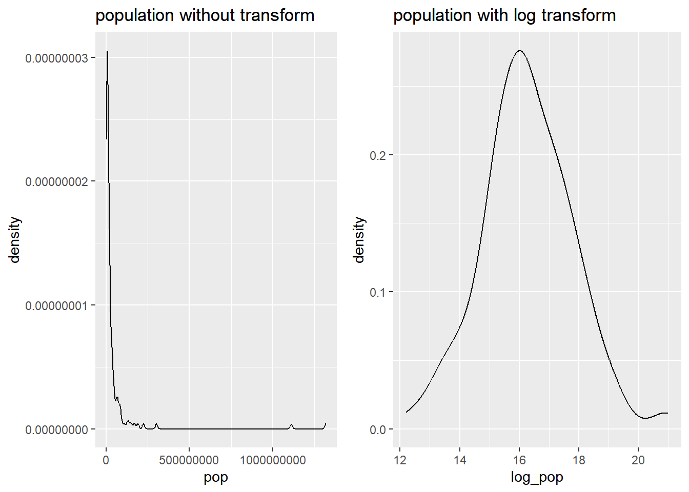
13.3.4 Outliers
13.3.4.1 Identify outliers
Consider the distribution, shown here, of the life expectancies of the countries in Asia. The box plot identifies one clear outlier: a country with a notably low life expectancy.
# box plot for Asia lifeExp
gap2007 %>%
filter(continent == "Asia") %>%
ggplot(aes(x = 1, y = lifeExp)) +
geom_boxplot()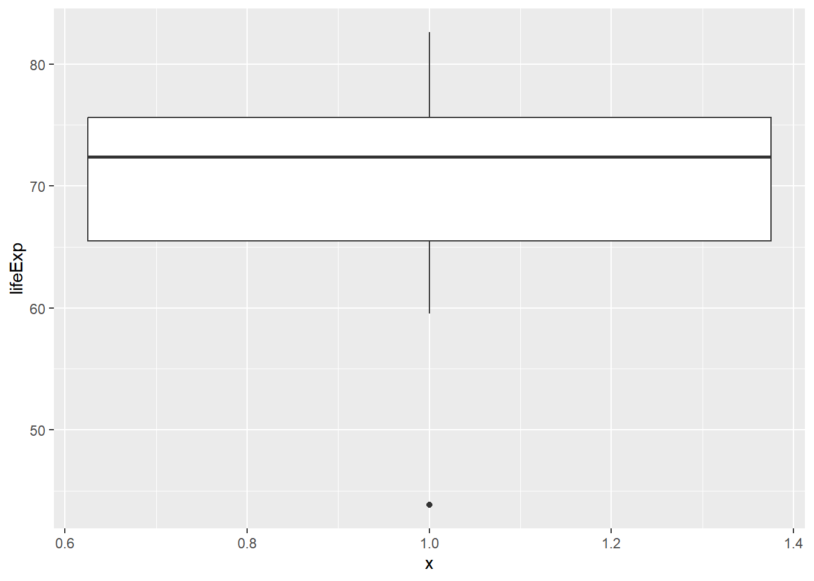
# which country with lowest lifeExp
gap2007[which.min(gap2007$lifeExp), c("country", "lifeExp")]## # A tibble: 1 × 2
## country lifeExp
## <fct> <dbl>
## 1 Swaziland 39.6Building a plot with that country removed.
# Filter for Asia, add column indicating outliers
gap_asia <- gap2007 %>%
filter(continent == "Asia") %>%
mutate(is_outliner = lifeExp < 50)
# Remove outliers, create box plot of lifeExp
gap_asia %>%
filter(!is_outliner) %>%
ggplot(aes(x = 1, y = lifeExp)) +
geom_boxplot()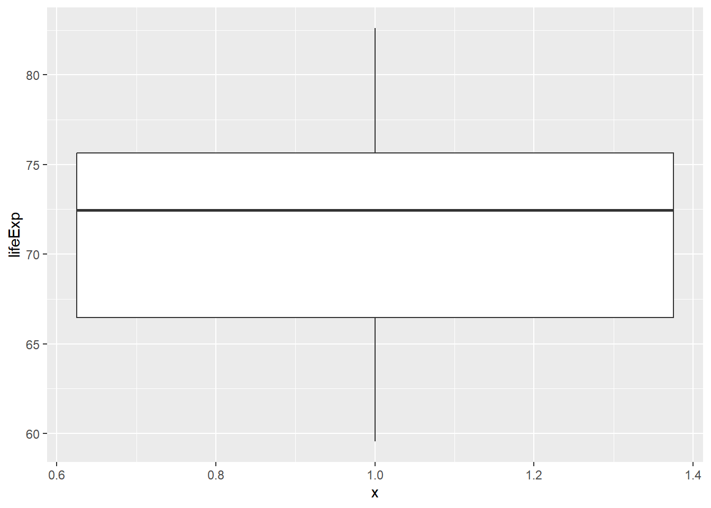
13.4 Case Study
13.4.1 New data
What characteristics of an email are associated with it being spam?
Here, you’ll use the email dataset to settle that question.
library(openintro)## Loading required package: airports## Loading required package: cherryblossom## Loading required package: usdata##
## Attaching package: 'openintro'## The following objects are masked from 'package:lattice':
##
## ethanol, lsegments## The following object is masked from 'package:babynames':
##
## birthsstr(email)## tibble [3,921 × 21] (S3: tbl_df/tbl/data.frame)
## $ spam : Factor w/ 2 levels "0","1": 1 1 1 1 1 1 1 1 1 1 ...
## $ to_multiple : Factor w/ 2 levels "0","1": 1 1 1 1 1 1 2 2 1 1 ...
## $ from : Factor w/ 2 levels "0","1": 2 2 2 2 2 2 2 2 2 2 ...
## $ cc : int [1:3921] 0 0 0 0 0 0 0 1 0 0 ...
## $ sent_email : Factor w/ 2 levels "0","1": 1 1 1 1 1 1 2 2 1 1 ...
## $ time : POSIXct[1:3921], format: "2012-01-01 14:16:41" "2012-01-01 15:03:59" ...
## $ image : num [1:3921] 0 0 0 0 0 0 0 1 0 0 ...
## $ attach : num [1:3921] 0 0 0 0 0 0 0 1 0 0 ...
## $ dollar : num [1:3921] 0 0 4 0 0 0 0 0 0 0 ...
## $ winner : Factor w/ 2 levels "no","yes": 1 1 1 1 1 1 1 1 1 1 ...
## $ inherit : num [1:3921] 0 0 1 0 0 0 0 0 0 0 ...
## $ viagra : num [1:3921] 0 0 0 0 0 0 0 0 0 0 ...
## $ password : num [1:3921] 0 0 0 0 2 2 0 0 0 0 ...
## $ num_char : num [1:3921] 11.37 10.5 7.77 13.26 1.23 ...
## $ line_breaks : int [1:3921] 202 202 192 255 29 25 193 237 69 68 ...
## $ format : Factor w/ 2 levels "0","1": 2 2 2 2 1 1 2 2 1 2 ...
## $ re_subj : Factor w/ 2 levels "0","1": 1 1 1 1 1 1 1 1 1 1 ...
## $ exclaim_subj: num [1:3921] 0 0 0 0 0 0 0 0 0 0 ...
## $ urgent_subj : Factor w/ 2 levels "0","1": 1 1 1 1 1 1 1 1 1 1 ...
## $ exclaim_mess: num [1:3921] 0 1 6 48 1 1 1 18 1 0 ...
## $ number : Factor w/ 3 levels "none","small",..: 3 2 2 2 1 1 3 2 2 2 ...# label factor for easier to read
email$spam <- factor(email$spam, labels = c("non-spam", "spam"))
str(email$spam)## Factor w/ 2 levels "non-spam","spam": 1 1 1 1 1 1 1 1 1 1 ...13.4.1.1 Spam and num_char
Is there an association between spam and the length of an email?
# distribution of num_char
ggplot(email, aes(x = num_char)) +
geom_density()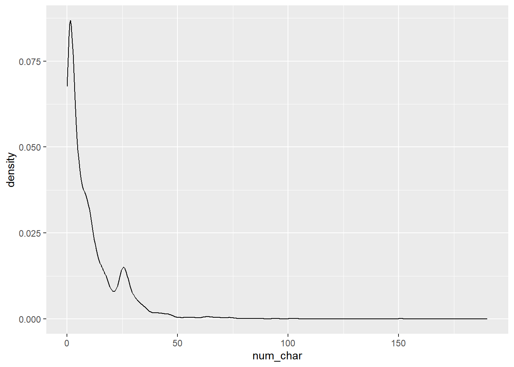
Compute appropriate measures of the center and spread of num_char for both spam and not-spam.
# Compute summary statistics
email %>%
group_by(spam) %>%
summarise(median(num_char),
IQR(num_char))## # A tibble: 2 × 3
## spam `median(num_char)` `IQR(num_char)`
## <fct> <dbl> <dbl>
## 1 non-spam 6.83 13.6
## 2 spam 1.05 2.82Construct side-by-side box plots to visualize the association between the same two variables.
# Create plot
email %>%
mutate(log_num_char = log(num_char)) %>%
ggplot(aes(x = spam, y = log_num_char)) +
geom_boxplot()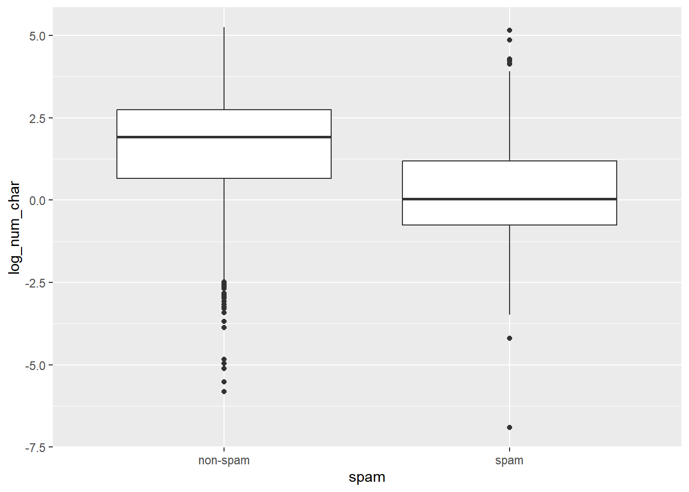
Interpretation: the median length of not-spam emails is greater than that of spam emails.
13.4.1.2 Spam and !!!
Let’s look at a more obvious indicator of spam: exclamation marks. exclaim_mess contains the number of exclamation marks in each message.
Using summary statistics and visualization, see if there is a relationship between this variable and whether or not a message is spam.
Side-by-side box plots
Faceted histograms
Overlaid density plots
# distribution of exclaim_mess
ggplot(email, aes(x = exclaim_mess)) +
geom_histogram() +
facet_wrap(~ spam)## `stat_bin()` using `bins = 30`. Pick better
## value with `binwidth`.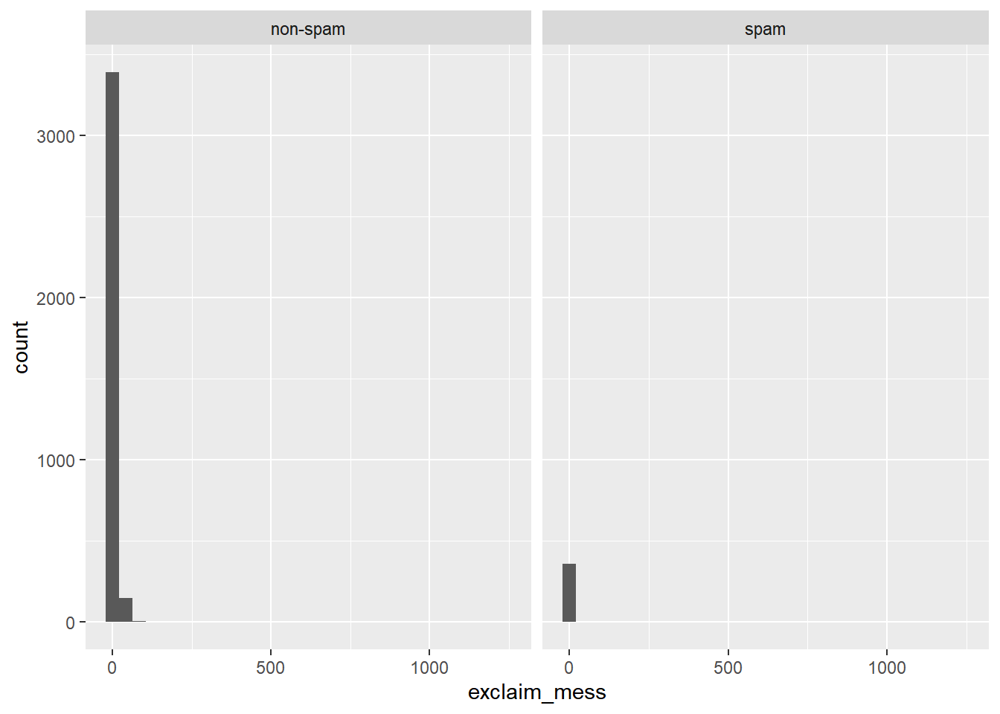
Calculate appropriate measures of the center and spread of exclaim_mess for both spam and not-spam.
# Compute center and spread for exclaim_mess by spam
email %>%
group_by(spam) %>%
summarise(median(exclaim_mess),
IQR(exclaim_mess))## # A tibble: 2 × 3
## spam `median(exclaim_mess)` `IQR(exclaim_mess)`
## <fct> <dbl> <dbl>
## 1 non-spam 1 5
## 2 spam 0 1Construct an appropriate plot to visualize the association between the same two variables, adding in a log-transformation step if necessary.
log(0) is -Inf in R, which isn’t a very useful value! You can get around this by adding a small number (like 0.01) to the quantity inside the log() function.
# Create plot for spam and exclaim_mess
email %>%
mutate(log_exclaim_mess = log(0.01 + exclaim_mess)) %>%
ggplot(aes(x = log_exclaim_mess)) +
geom_histogram() +
facet_wrap(~ spam)## `stat_bin()` using `bins = 30`. Pick better
## value with `binwidth`.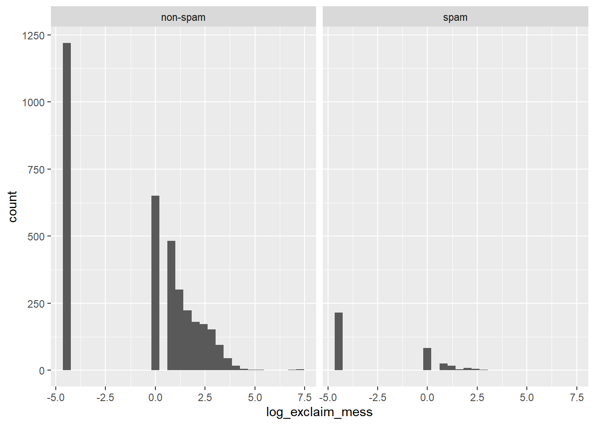
The dominant feature of the exclaim mess variable, though, is the large proportion of cases that report zero or on this log scale, -4 (point) 6 exclamation marks. This is a common occurrence in data analysis that is often termed “zero-inflation”.
13.4.2 Check-in 1
Zero inflation strategies
Analyze the two components separately (zero / non-zero)
Collapse into two-level categorical variable (zero / non-zero)
13.4.2.1 Collapsing levels
The number of images attached to each email (image) poses even more of a challenge.
# get a sense of image's distribution
table(email$image)##
## 0 1 2 3 4 5 9 20
## 3811 76 17 11 2 2 1 1Given the very low counts at the higher number of images, let’s collapse image into a categorical variable that indicates whether or not the email had at least one image.
# Create plot of proportion of spam by image
email %>%
mutate(has_image = image > 0) %>%
ggplot(aes(x = has_image, fill = spam)) +
geom_bar(position = "fill")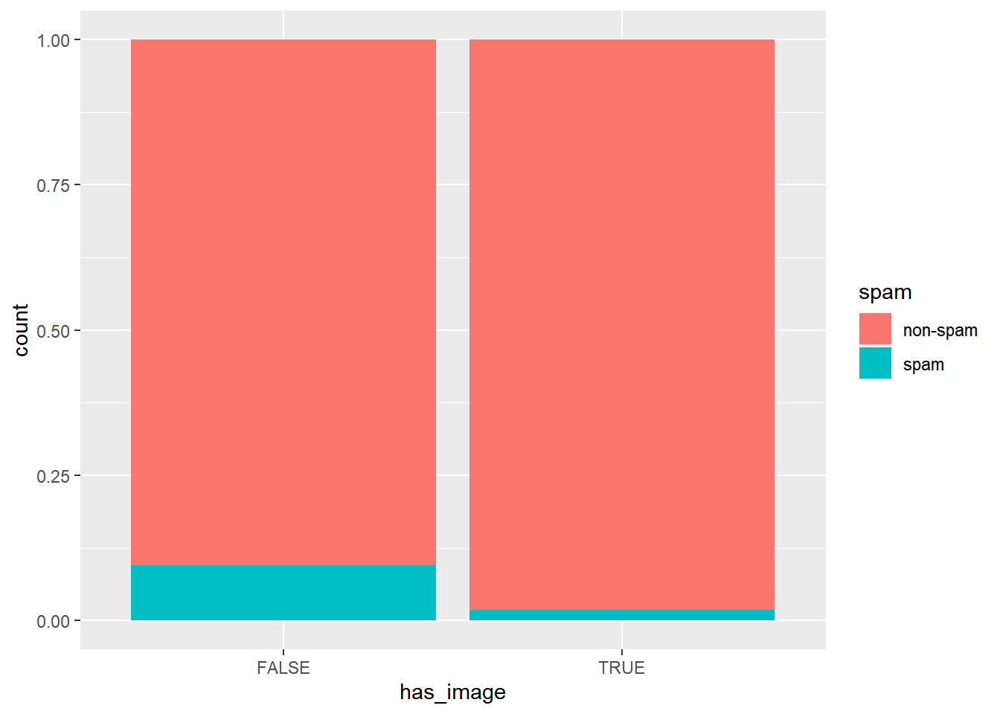
An email without an image is more likely to be not-spam than spam.
13.4.2.2 Data Integrity
In the process of exploring a dataset, you’ll sometimes come across something that will lead you to question how the data were compiled.
Consider the variables image and attach. Do attached images count as attached files in this dataset?
# Test if images count as attachments
sum(email$image > email$attach)## [1] 0Since image is never greater than attach, we can infer that images are counted as attachments.
13.4.2.3 Answer questions with chains
Build a chain to answer each of the following questions, both about the variable dollar.
For emails containing the word “dollar”, does the typical spam email contain a greater number of occurrences of the word than the typical non-spam email?
# Question 1
email %>%
filter(dollar > 0) %>%
group_by(spam) %>%
summarize(median(num_char))## # A tibble: 2 × 2
## spam `median(num_char)`
## <fct> <dbl>
## 1 non-spam 12.3
## 2 spam 1.41If you encounter an email with greater than 10 occurrences of the word dollar, is it more likely to be spam or not-spam?
# Question 2
email %>%
filter(dollar > 10) %>%
ggplot(aes(x = spam)) +
geom_bar()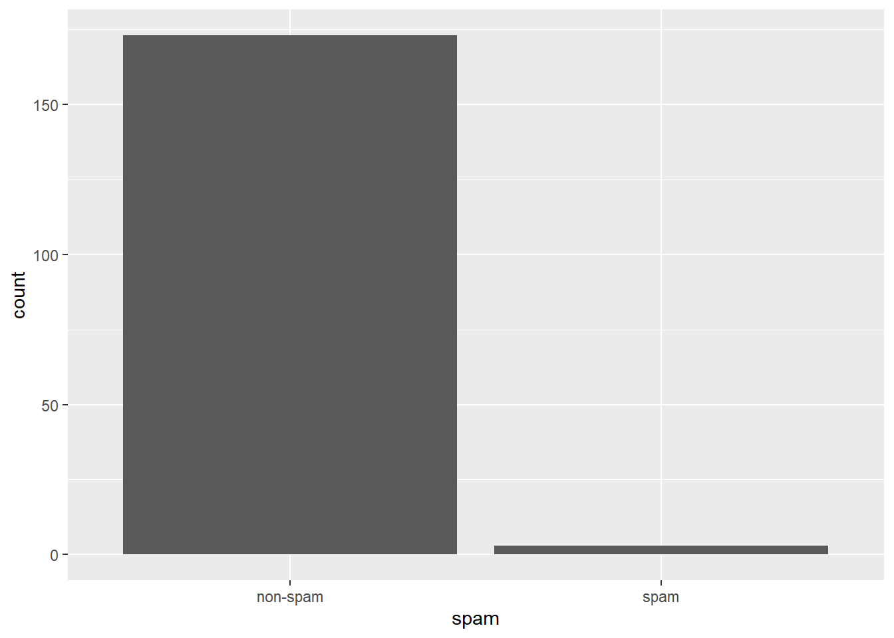
13.4.3 Check-in 2
13.4.3.1 What’s in a number?
Turn your attention to the variable called number. It’s a factor variable saying whether there was no number, a small number (under 1 million), or a big number.
To explore the association between this variable and spam, select and construct an informative plot.
Faceted bar charts
Side-by-side bar charts
Stacked and normalized bar charts.
# Reorder the levels of number so that they preserve the natural ordering.
email$number_reordered <- factor(email$number, levels = c("none", "small", "big"))
# Construct a faceted bar chart of the association between number_reordered and spam.
ggplot(email, aes(x = number_reordered)) +
geom_bar() +
facet_wrap(~ spam)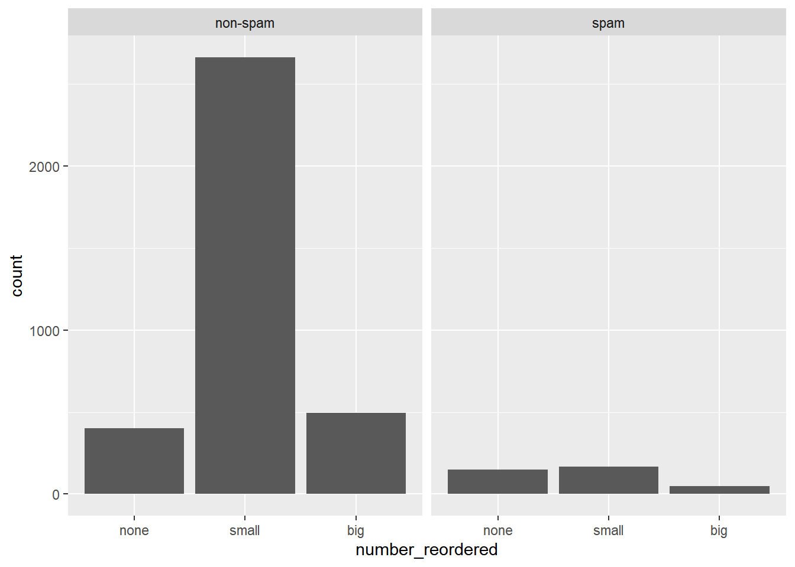